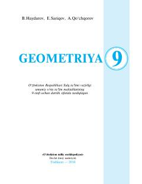

G99-sinf o'quvchilari uchun tasdiqlangan davlat geometriya darsligi.
Ushbu darslik umumiy o'rta ta'lim maktablarining 9-sinf o'quvchilari uchun mo'ljallangan bo'lib, o'xshash geometrik shakllar, uchburchak tomonlari va burchaklari orasidagi munosabatlar hamda aylana uzunligi va doira yuzini o'rgatadi. Kitob nazariy materiallar, hayotiy misollar va o'quvchilarning ijodiy fikrlashini rivojlantiruvchi masalalarni o'z ichiga oladi.